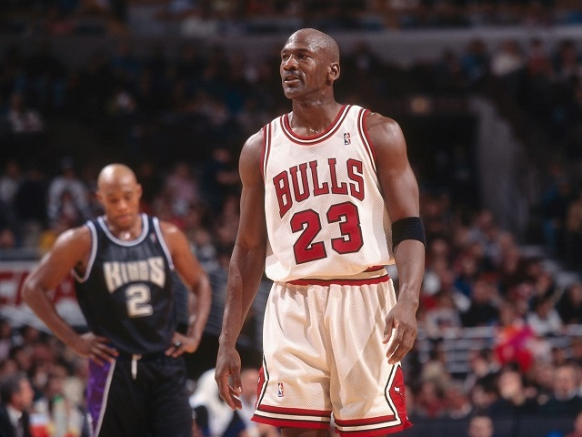
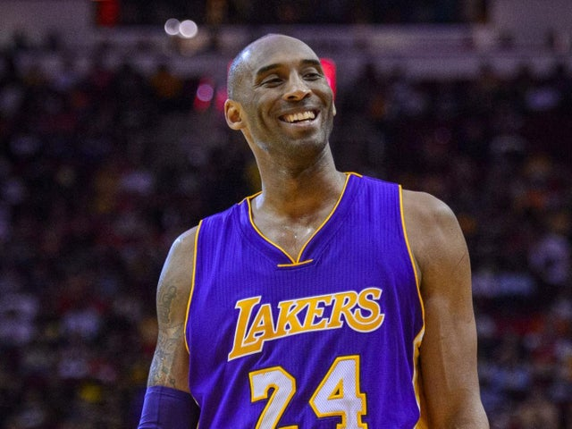
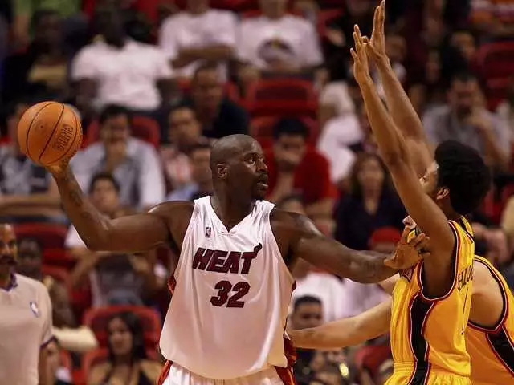
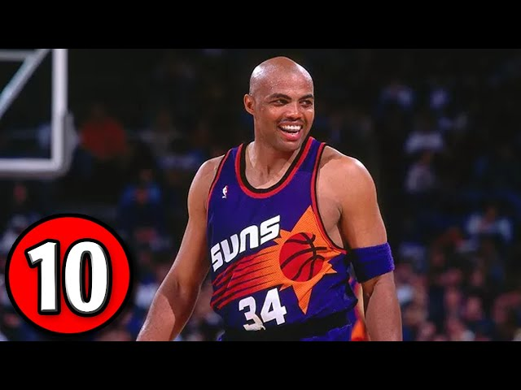
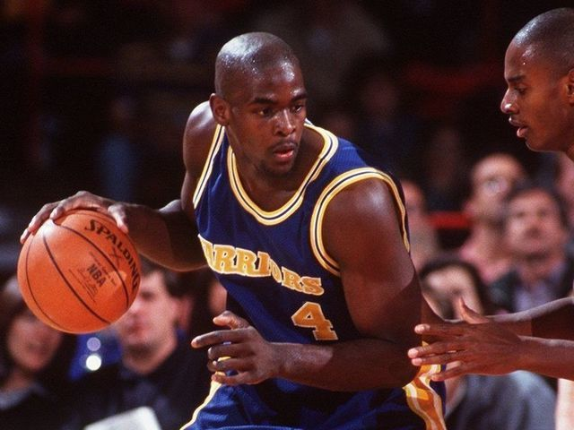

Híres játékosok

Michael Jeffrey Jordan
Michael Jeffrey Jordan (New York, 1963. február 17. –) visszavonult
hivatásos amerikai kosárlabdázó. Széles körben a világ legsikeresebb kosárlabdázójának tartják,
ő volt generációja legjobban szponzorált játékosa, és kiemelkedő szerepe volt abban,
hogy az NBA népszerűsége a 80-as és 90-es években
világszerte egyre növekedett. Minden idők egyik legnagyobb hatású sportolója.

Kobe Bean Bryant
Kobe Bean Bryant (Philadelphia, Pennsylvania, 1978. augusztus 23. – Calabasas, Kalifornia,
2020. január 26.[4]) olimpiai bajnok amerikai kosárlabdázó, az Észak-amerikai Profi Kosárlabdaligában
(NBA), 1996 és 2016 között a Los Angeles Lakers csapatában játszott. Posztja: dobóhátvéd. 2018-ban az
általa írt és producerként
is jegyzett Dear Basketball című rajzfilmjével Oscar-díjat nyert az animált rövidfilmek kategóriájában.

Shaquille Rashaun O’Neal
Shaquille Rashaun O’Neal (Newark, New Jersey, 1972. március 6. –)
amerikai visszavonult profi kosárlabdázó, rapper és színész. Négyszeres NBA-bajnok (hármat a Los Angeles Lakersszel, egyet pedig a Miami Heattel nyert meg).
2011 nyarán visszavonult, utolsó csapata a Boston Celtics volt.

Charles Barkley
Charles „Chuck” Wade Barkley (Leeds, 1963. február 20. –)
visszavonult hivatásos amerikai kosárlabdázó. Becenevét, a Sir Charles-t agresszív és
szókimondó magatartása miatt, a The Round Mound of Rebound-ot pedig szokatlan testalkatáról
és játékstílusáról kapta. Barkley ezzel megalapozta jövőjét az NBA-ben, erőcsatárként.
Pályafutása során beválasztották öt-öt alkalommal az All-NBA első és második csapatában,
és egyszer kerülhetett be a harmadik csapatba is. Tizenegy All-Star gálán vett részt,
1991-ben a gála MVP-jévé választották. 2006-ban Barkley-t
beiktatták a Kosárlabda Hírességek Csarnokába.

Chris Webber
Webber jelenleg is NBA szakértőként dolgozik a TNT televíziónál, és az NBA TV-nél,
17 éves kosárlabda pályafutása alatt sok csapatnál megfordult: Golden State, Sacramento Kings,
Detroit Pistons. Pályafutása során összesen 178.230.697 dollárt pattogtatott össze.
Ray Allen
Ray Allen hivatalosan még nem jelentette be visszavonulását,
így ő még feljebb is kerülhet ezen a listán. Sikeres hárompontos dobásokat
tekintve vezeti az NBA örökranglistáját, és bajnoki gyűrű büszke tulajdonosa is.
Karrierje során összesen 184.356.410 dollárral lett gazdagabb.